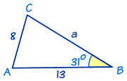
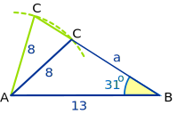
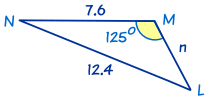
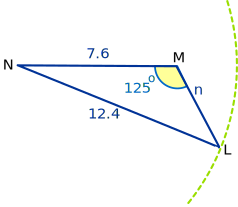

Solving SSA Triangles
"SSA" means "Side, Side, Angle"
 |
"SSA" is when we know two sides and an angle that is not the angle between the sides. |
|
To solve an SSA triangle
|
Example 1

In this triangle we know
- angle B = 31°
- b = 8
- and c = 13
In this case, we can use The Law of Sines first to find angle C:
Next, we can use the three angles add to 180° to find angle A:
Now we can use The Law of Sines again to find a:
Notice that we didn't use A = 92.2°, that angle is rounded to 1 decimal place. It's much better to use the unrounded number 92.181...° which should still be on our calculator from the last calculation.
So, we have completely solved the triangle ...
... or have we?
* Back when we calculated:
C = sin−1(0.8369...)
C = 56.818...°
We didn't think that sin−1(0.8369...) might have two answers (see Law of Sines)
The other answer for C is 180° − 56.818...°
Here you can see why we have two possible answers:

By swinging side "8" left and right we can
join up with side "a" in two possible locations.
So let's go back and continue our example:
The other possible angle is:
With a new value for C we will have new values for angle A and side a
Use "the three angles add to 180°" to find angle A:
Now we can use The Law of Sines again to find a:
So the two sets of answers are:
C = 56.8°, A = 92.2°, a = 15.52
C = 123.2°, A = 25.8°, a = 6.76
Example 2

This is also an SSA triangle.
In this triangle we know angle M = 125°, m = 12.4 and l = 7.6
We will use The Law of Sines to find angle L first:
Next, we will use "the three angles add to 180°" to find angle N:
Now we will use The Law of Sines again to find n:

Note there is only one answer in this case. The "12.4" line only joins up one place.
The other possible answer for L is 149.9°. But that is impossible because we already have M = 125° and a triangle can't have two angles greater than 90°.
Conclusion:
When solving a "Side, Side, Angle" triangle we need to
check if there could be another possible answer!